We introduce Explorative Modeling, a new paradigm for generative modeling that acts as a third pretraining axis when added to existing generative models, and also enables end-to-end generation. Increasing exploration monotonically improves existing models across images, video, and language, and the gains grow with scale (7%→36% with data, 13%→23% with parameters). Concretely, Explorative Models (XMs) reach 6.2× sample efficiency, 4.1× FLOP efficiency, and 47% better parameter efficiency. Exploration also enables scaling generalization, and scaling how end-to-end existing models are. As end-to-end generative models, XMs match diffusion on control tasks with up to 256× less inference compute.
A generative model can break two things into pieces: how it generates, or how it trains. Today's models break up generation into hundreds of small steps, which works but prevents end-to-end generation. Explorative Models (XMs) break up training instead, through exploration. Because of this, for existing generative models, XMs unlock a third pretraining axis beyond parameters and data. XMs also enable end-to-end generative modeling, where sampling during training and inference are identical.
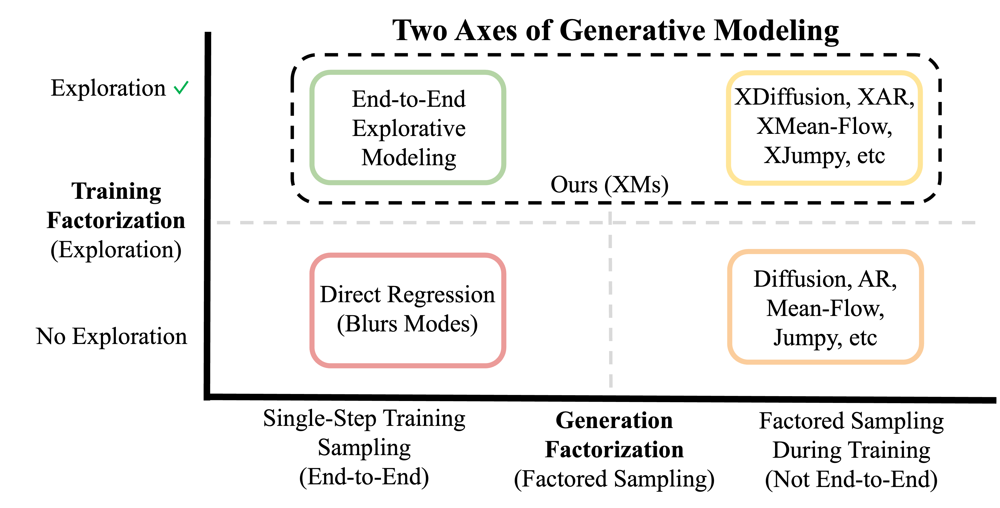
Two axes of generative modeling.
We add exploration to RAE, a near-SOTA image-generation recipe. Without any hyperparameter tuning, simply adding XM gives 6.2× better data efficiency and 4.1× better FLOP efficiency. The compute-optimal amount of exploration also keeps growing the longer you train.
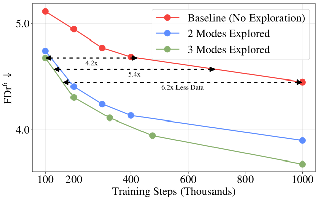
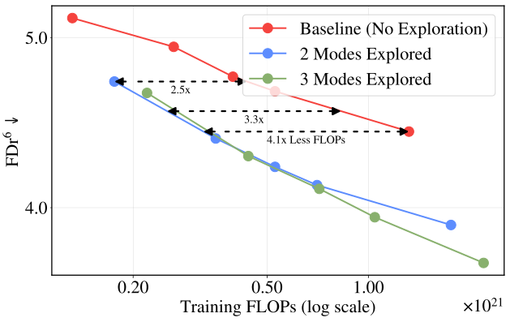
Adding exploration to RAE reaches the no-exploration baseline's best quality with 6.2× less data (left) and 4.1× fewer FLOPs (right); quality is FDr⁶ (lower is better).
The same holds for model size: a Large model that explores 5 modes outscales an XLarge model with 47% more parameters and no exploration.
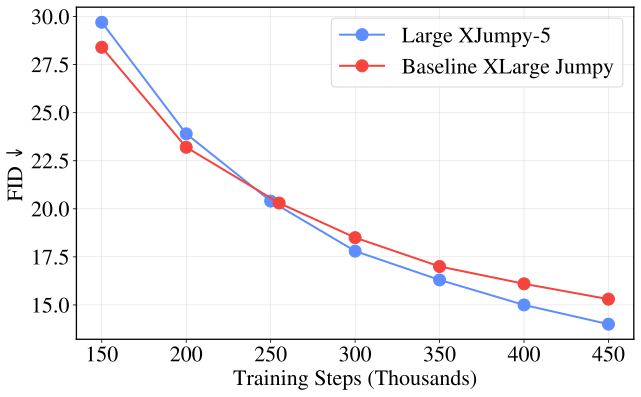
A Large model exploring 5 modes scales better than an XLarge model with 47% more parameters and no exploration.
With the model fixed, increasing exploration alone monotonically improves performance across images (FID), video (FVD), and language (a masked-diffusion LM). Some models gain over 20%, and the gains have not stopped at the highest exploration levels we test.
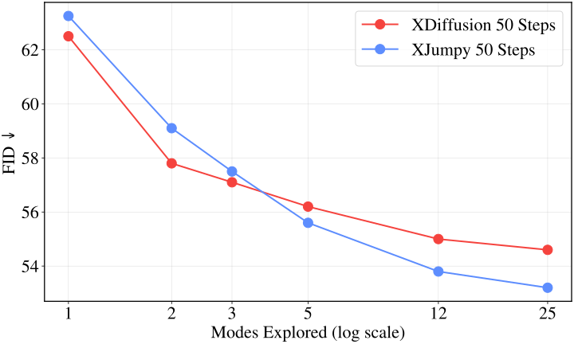
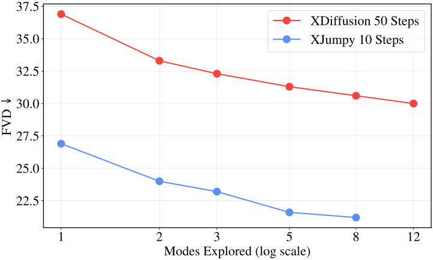
As modes explored increases, both FID (left) and FVD (right) improve for Explorative Diffusion (XDiffusion) and Explorative Jumpy (XJumpy); the more end-to-end model (XJumpy) benefits more.
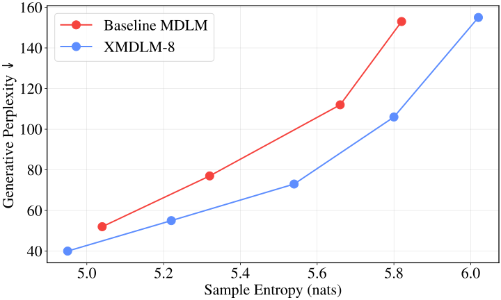
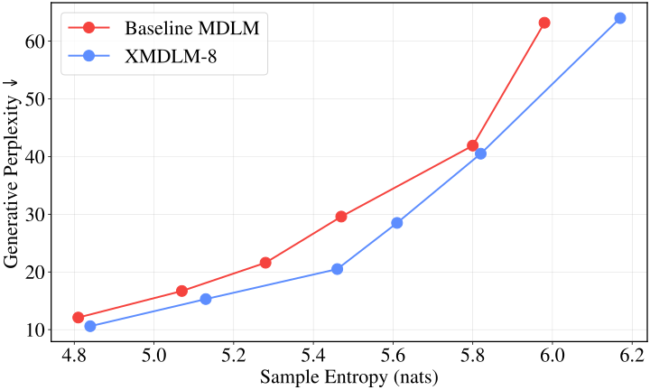
It works for text too: adding exploration to a masked-diffusion language model (XMDLM, 8 modes) lowers perplexity at every diversity level, for both fast 8-step (left) and slower 256-step (right) generation.
A generative model's performance is limited by three capacities: parameters restrict what it can represent, data restricts what it can learn, and generative expressivity restricts what it can generate. Scaling parameters and data relieves the first two, but generative expressivity is set by the training objective itself, so as models and data grow it increasingly becomes the bottleneck. Exploration raises generative expressivity directly, and its gains grow with scale — rising from 13% to 23% as models scale and from 7% to 36% as data scales. This is what makes exploration a genuine third pretraining axis: just like parameters and data, the compute-optimal amount of exploration grows with scale, so models trained without it fall increasingly short.
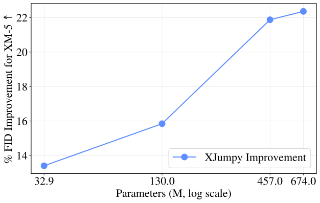
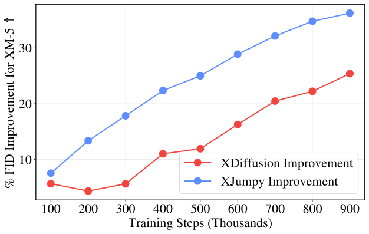
The improvement from exploring 5 modes grows with model size (left, 13%→23%) and data (right, 7%→36%), the signature of a real scaling axis.
Because exploration commits to real modes instead of a blurry average, there's less of an artifact to memorize, so models generalize better. On a small video dataset, more exploration overfits less and reaches a better best FVD (30.0 vs 37.5).
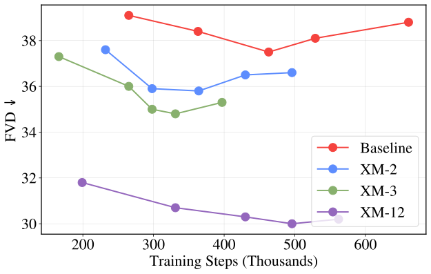
Tracking held-out video quality over training: more exploration memorizes the training set less and reaches a better best FVD (30.0 at XM-12 vs 37.5 with none).
Exploration also lifts the strongest recipes. Added to RAE (state-of-the-art for ImageNet 256×256 shortly before this work), it reaches a near-best 1.43 FID without guidance and converges ~300× faster than the standard SiT recipe.
| Method (ImageNet 256×256, no guidance) | gFID ↓ | FDr6 ↓ | IS ↑ |
|---|---|---|---|
| REPA-E (VAE latent diffusion) | 1.70 | – | 217.3 |
| DiTDH-XL (RAE baseline) | 1.55 | 4.42 | 237.3 |
| XDiTDH-XL, XM-2 Ours | 1.43 | 3.91 | 240.3 |
Lower gFID and FDr⁶ are better; higher IS is better. Adding exploration (XM-2) improves all three and reaches roughly best-in-class quality without guidance. (FDr⁶ is a newer, more reliable score than FID.) Baselines adapted from Zheng et al. (2025).
Exploration helped every model family we tested, but models that are more end-to-end benefit most. This is because factoring training can substitute for factoring generation: exploration supplies the generative expressivity that extra generation steps would otherwise provide, so as exploration increases, the best-performing models become increasingly end-to-end. In effect, exploration lets us scale how end-to-end existing generative models are — turning it from a fixed design choice into a scalable one.
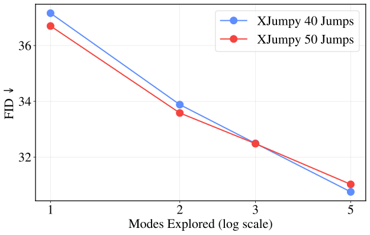
Explorative Jumpy models with different numbers of generation steps: when exploration is low, models with more steps perform best, but as exploration increases the optimal number of steps shrinks — models that are more end-to-end (fewer steps) scale better with exploration.
An end-to-end Explorative Model generates the same way it trains, matching diffusion with a fraction of the steps.
Taken to its limit, exploration handles all the multimodality during training, so the model generates end-to-end in one step (or a few) instead of hundreds. Where diffusion pays for many modes with inference steps, end-to-end XMs pay during training and generate in a single pass. We test this on robotics and world modeling, with barely any XM-specific tuning.
On robot manipulation tasks, our Explorative Policy matches or beats Diffusion Policy on every task while using a single network forward pass at inference instead of 100.
| Method (robot manipulation) | Steps ↓ | Lift | Can | Square | Transport | Tool Hang |
|---|---|---|---|---|---|---|
| Diffusion Policy | 100 | 100% | 100% | 94% | 72% | 86% |
| Explorative Policy Ours | 1 | 100% | 100% | 96% | 74% | 86% |
Success rates on Robomimic (higher is better). "Steps" is network forward passes (NFEs) at inference: our model uses 1, Diffusion Policy uses 100.
On maze planning tasks, our Explorative World Model gets a better average score than Diffuser while running 16–256× fewer steps (≈80× less on average).
| Method (Maze2D) | U-Maze | Medium | Large | Average | ||||
|---|---|---|---|---|---|---|---|---|
| Score ↑ | Steps ↓ | Score ↑ | Steps ↓ | Score ↑ | Steps ↓ | Score ↑ | Steps ↓ | |
| Diffuser | 118.7 | 64 | 128.5 | 256 | 134.4 | 256 | 127.2 | 192 |
| Explorative World Model Ours | 121.4 | 4 | 122.9 | 1 | 145.8 | 1.9 | 130.0 | 2.3 |
Planning on Maze2D (higher score is better; fewer steps is cheaper). Our model scores better on average while using far fewer steps (NFEs).
We provide pseudocode below for the simplest way to add XM to your generative model (Forward XM). It's just best-of-K: wrap your existing loss in a short for loop and keep the closest of K candidates.
y = model(sample_latent()) # generate one output (from noise, a mask, …) loss = recon_loss(y, x) # score it against the data target x loss.backward()
losses = [] for _ in range(K): # explore K candidate outputs y = model(sample_latent()) # generate one candidate losses.append(recon_loss(y, x)) # score each against x min(losses).backward() # train only the closest candidate
t = sample_timestep() losses = [] for _ in range(K): # explore K candidate noises z = randn_like(x) # one candidate noise x_t = add_noise(x, z, t) # noise the data to level t losses.append(diffusion_loss(model(x_t, t), x, z)) min(losses).backward() # train only the closest candidate
This is Forward XM (explore over the model's generations). The same recipe works in discrete spaces, e.g. with masked-diffusion language models, where sample_latent() is a learned latent embedding. See github.com/alexiglad/XM for the full code.
If you'd like to try it on your own problem, we'd love to hear how it goes. Feel free to reach out!
@misc{gladstone2026explorativemodelingunlockingpretraining,
title={Explorative Modeling: Unlocking a Third Pretraining Axis and End-to-End Generation},
author={Alexi Gladstone and Heng Ji and Yilun Du},
year={2026},
eprint={2607.27372},
archivePrefix={arXiv},
primaryClass={cs.LG},
url={https://arxiv.org/abs/2607.27372},
}